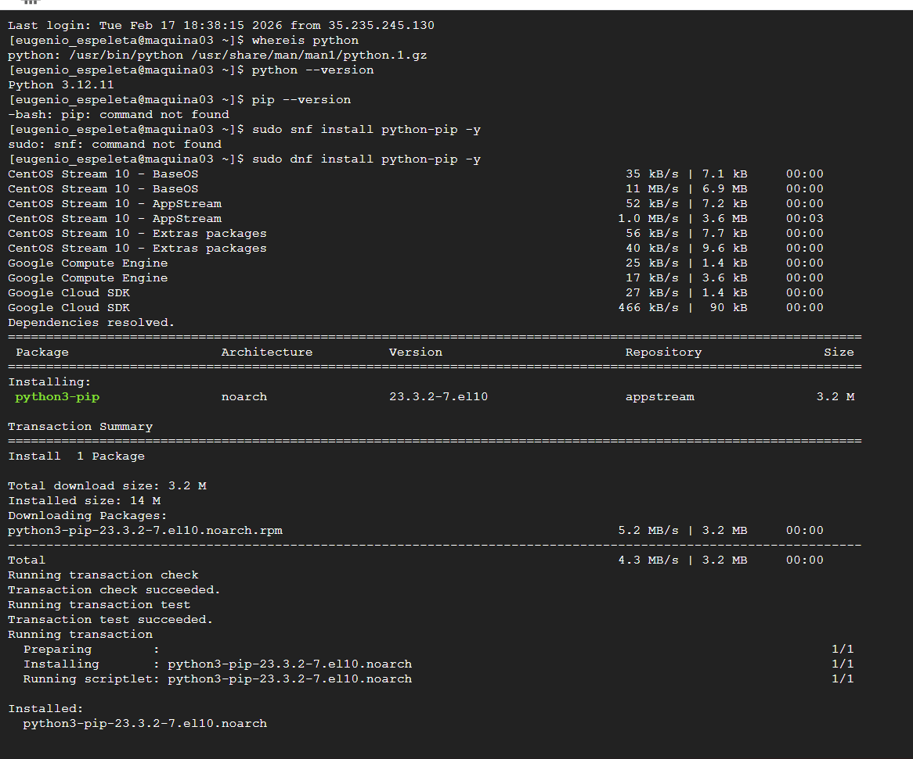
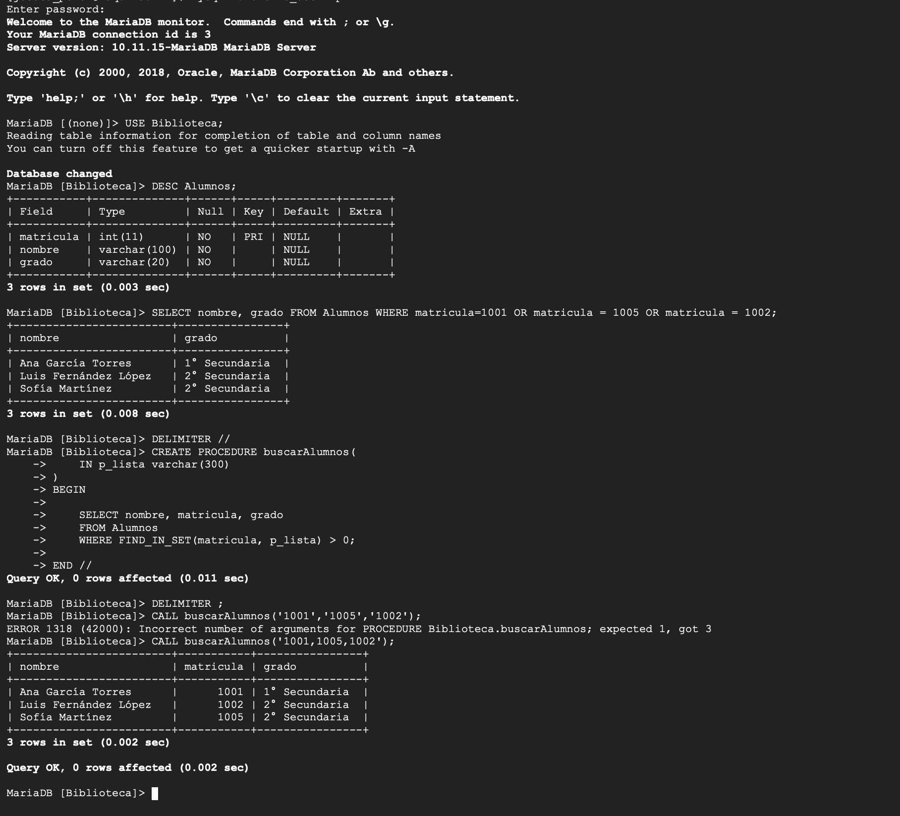
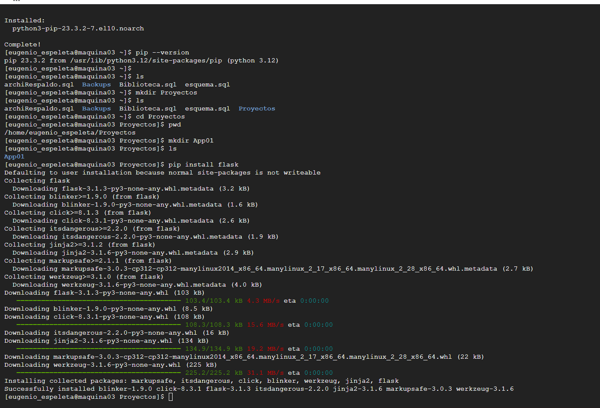

Tarea 08: Stored Procedures avanzados + Setup de Flask en Linux
Índice
1. Objetivo
Implementar y validar procedimientos almacenados en MariaDB para consultas parametrizadas con listas CSV y para retorno de resultados con parámetro OUT. Además, preparar el entorno base de Python en Linux con instalación de pip y Flask.
2. Contexto del Ejercicio
La práctica se desarrolló con el usuario biblio_user sobre la base Biblioteca. Se revisó la tabla Alumnos, se comparó una consulta manual vs un procedure reutilizable, y se probó un procedimiento con salida mediante variable de sesión. Al final se configuró el entorno de Python para pasos posteriores de integración.
3. Conceptos Técnicos
DELIMITER
Se usa para definir bloques de procedimientos sin que MariaDB termine la sentencia al primer ;. Se cambia temporalmente y luego se restaura.
FIND_IN_SET
FIND_IN_SET(valor, lista_csv) permite validar si un valor está dentro de una lista separada por comas, útil para filtros dinámicos con un solo parámetro.
Parámetros OUT
Con un parámetro OUT, un procedure puede regresar un valor al cliente. En esta actividad se utilizó para obtener el total de registros de Alumnos.
pip y Flask
pip gestiona paquetes de Python. Tras instalar python3-pip en Linux, se añadió Flask para habilitar la base de un backend web.
4. Desarrollo
4.1 Selección de base y revisión de tabla
USE Biblioteca;
DESC Alumnos;4.2 Consulta tradicional por matrículas específicas
SELECT nombre, grado
FROM Alumnos
WHERE matricula = 1001
OR matricula = 1005
OR matricula = 1002;4.3 Procedure buscarAlumnos con lista CSV (FIND_IN_SET)
DELIMITER //
CREATE PROCEDURE buscarAlumnos(
IN p_lista VARCHAR(300)
)
BEGIN
SELECT nombre, matricula, grado
FROM Alumnos
WHERE FIND_IN_SET(matricula, p_lista) > 0;
END //
DELIMITER ;
CALL buscarAlumnos('1001,1005,1002');También se documentó la llamada con número incorrecto de argumentos (error 1318), seguida por la ejecución correcta con un solo parámetro CSV.
4.4 Conteo de alumnos y procedure contarAlumnos con OUT
SELECT COUNT(*) FROM Alumnos;
DELIMITER //
CREATE PROCEDURE contarAlumnos(
OUT p_contar INT
)
BEGIN
SELECT COUNT(*) INTO p_contar FROM Alumnos;
END //
DELIMITER ;
CALL contarAlumnos(@s);
SELECT @s;4.5 Preparación de entorno Python: pip + Flask
whereis python
python --version
pip --version
sudo dnf install python3-pip -y
pip --version
mkdir -p Proyectos/App01
cd Proyectos/App01
pip install flask5. Evidencias y Entregables
- DESC de Alumnos y estructura validada.
- Procedure
buscarAlumnosconFIND_IN_SETy validación de llamada. - Procedure
contarAlumnoscon parámetroOUTy recuperación con@s. - Instalación de
python3-pipyFlasken Linux.
Evidence 1

Selección de base, descripción de Alumnos y preparación del contexto SQL.
Evidence 2

Creación/ejecución de procedures con FIND_IN_SET y recuperación de valor mediante parámetro OUT.
Evidence 3

Verificación de Python, instalación de python3-pip y posterior instalación de Flask.
6. Conclusiones y Reflexión Técnica
Se consolidó el uso de procedimientos almacenados para resolver consultas repetitivas y devolver resultados estructurados al cliente SQL. El uso de listas CSV y parámetros OUT redujo repetición y mejoró reutilización. En paralelo, dejar Python con pip y Flask instalado prepara el camino para integrar la base con servicios web.
7. Autenticidad e Integridad Académica
Declaro que las operaciones presentadas fueron ejecutadas en un entorno real de Linux con MariaDB y que las evidencias incluyen tanto resultados correctos como validaciones de error durante la práctica.
8. Preguntas Frecuentes
¿Por qué usar FIND_IN_SET en lugar de muchos OR?
Porque permite recibir una lista dinámica en un solo parámetro y evita reescribir la consulta cada vez que cambia el conjunto de matrículas.
¿Qué beneficio aporta un parámetro OUT?
Permite regresar resultados agregados (por ejemplo conteos) para usarlos después en variables de sesión.
¿Cómo validar que Flask quedó instalado?
Ejecutando pip show flask o importándolo desde Python con python -c "import flask".
9. Referencias APA
10. Historial de Versiones
| Versión | Fecha | Cambios | Autor |
|---|---|---|---|
| v1.0 | 2026-02-25 | Creación de tarea con evidencias reales y script SQL. | Eugenio E. |
11. Bitácora de Defensa Oral
Respuesta: Evita consultas rígidas y permite filtrar múltiples matrículas con un solo parámetro dinámico.
Respuesta: Que un procedure puede devolver valores escalares útiles para reportes o decisiones de lógica posterior.
Respuesta: Porque habilita la siguiente fase: exponer consultas/procedures desde una API en Python.